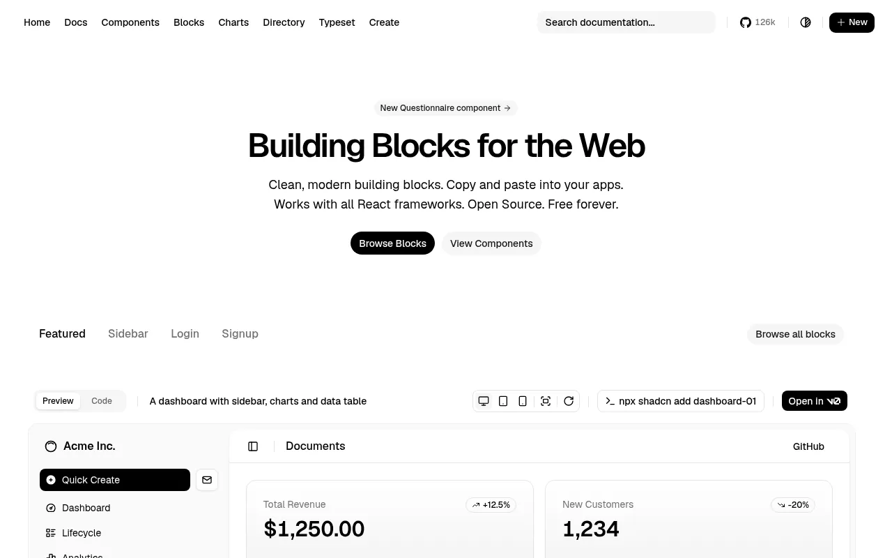
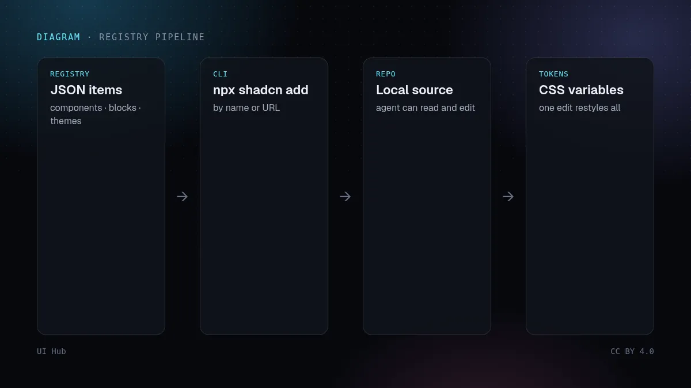

shadcn/ui 不是一个要安装的依赖包，而是一套你把源码复制进项目的组件。Blocks 把这个思路扩展到整个区块：仪表盘、侧栏、登录注册页、图表。每个都用 CLI 添加，例如 npx shadcn@latest add dashboard-01，落地为可编辑的文件。

shadcn 的 registry 格式让任何团队都能把组件、区块、hooks 和主题文件发布成 CLI 能读的 JSON。Magic UI、Cult UI 等很多库都这样分发，你也可以给自己的设计系统搭一个私有 registry。
npx shadcn@latest add https://your-registry.example/r/pricing-01.json
想让 AI 生成的界面保持一致，就给智能体一个 registry，而不是一个风格形容词。从官方 blocks 起步，用 Token 换风格，再把改过的版本发布到私有 registry，之后每次会话都从你的系统出发。